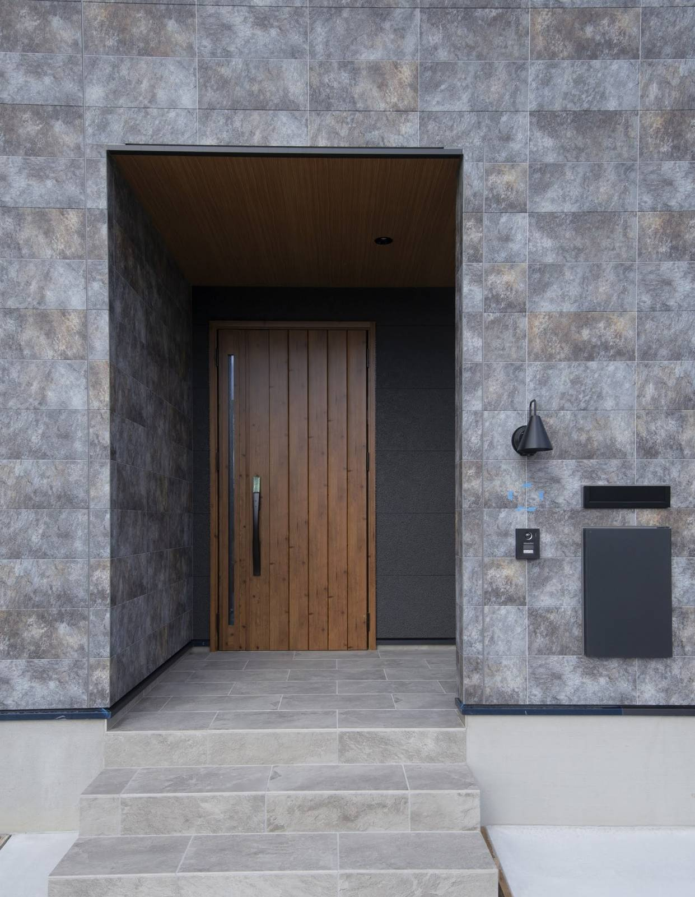

間取りは、打ち合わせのあいだ何度でも描き直せます。
設備も、断熱の厚みも、あとから選び直せます。
土地に付いてくる校区だけは、そうはいきません。

子どもが小学校へ通う6年間は、毎朝ここから始まります。
大阪や京都から奈良へ移って建てる方から、いちばんよく聞かれるのが学校のことです。
そして、いちばん見落とされやすいのも学校のことです。
土地探しでは、まず駅からの距離と値段を見ます。
次に日当たり、広さ、形。
校区が話に出るのは、たいてい申し込みの直前です。
奈良は、住所で行く学校が決まります
公立の小学校と中学校は、住んでいる場所によって通う学校が決まります。
この区切りが通学区域、いわゆる校区です。
奈良市は、市立小学校43校ぶんの通学区域を町名ごとに公開しています。
中学校の通学区域も、別に用意されています。
ここで気をつけたいのが、次の一文です。
つまり、町名だけでは決まりません。
道1本、番地ひとつで、通う学校が変わることがあります。
不動産の広告に「◯◯小学校区」と書かれていることがあります。
親切な表示ですが、そのまま信じきらないでください。
分譲地が広い場合、区画によって校区が分かれていることがあります。
市町村によって、決まりが違います
「奈良県はこうです」とまとめられないのが、この話のややこしいところです。
決めているのは県ではなく、市町村だからです。
- 奈良市
住所で通う学校が決まります。事情がある場合に限り、指定校の変更や区域外就学を申請できる仕組みがあります - 生駒市
小学校に隣接校選択制があります。希望によって、隣の校区の学校を選ぶことができます
同じ奈良県内で、前提がここまで違います。
隣の市の話を聞いて「奈良もそうだろう」と思い込むと、あとで慌てます。
土地がある市町村の教育委員会のページを、必ず自分で開いてください。
土地を決める前に、見ておく4つ
1. 番地で確かめる
市のページの通学区域一覧に、町名と学校名が並んでいます。
買おうとしている土地の番地が、どちらに入るかを見ます。
境目にある土地なら、電話で聞くのがいちばん確実です。
奈良市なら、教育委員会の教育総務課が窓口になります。
2. 中学校区も一緒に見る
小学校の校区と中学校の校区は、別々に決められています。
同じ小学校に通っていた子が、中学で分かれる地域もあります。
小学校の6年間より、そのあとの3年間のほうが、部活や塾で行動範囲が広がります。
自転車で通える距離かどうかは、先に見ておいてください。
3. 通学路は、朝の時間に歩く
昼間に車で通ると、たいていの道は問題なく見えます。
見るべきなのは、平日の朝7時半から8時半です。
- 信号のない横断はあるか
- 歩道はあるか。白い線だけの道ではないか
- 抜け道になっていて、通勤の車が多くないか
- 登校班の集合場所はどこか
この時間に一度歩いておくと、地図では絶対に分からないことが見えます。
4. 距離ではなく、坂で測る
奈良は坂の多い土地です。
地図に出る「徒歩12分」は、平らな道を歩いた時間です。
高台の造成地は、見晴らしがよく、地盤も落ち着いていることが多い。
そのかわり、帰りが上りになります。
ランドセルを背負った1年生の足で、その坂を上れるか。
これは実際に歩いてみないと判断できません。

家の中をどれだけ整えても、扉の外の道は変えられません。
引っ越しの時期と、学年の切り替わり
大阪や京都から移ってくる方に、必ずお伝えしていることがあります。
お引き渡しの時期と、学年の切り替わりを合わせるかどうかです。
家づくりは、土地を決めてからお引き渡しまで1年前後かかります。
その途中で今の住まいを引き払うと、完成までの仮住まいが挟まります。
仮住まいの場所によっては、転校が二度になることもあります。
3月のお引き渡しに間に合わせるなら、逆算して土地を決める時期が決まります。
無理に急いで土地を選ぶのは本末転倒ですが、
「いつ入学するか」を先に言っていただけると、全体の組み方が変わります。
校区で、土地の値段は変わるのか
正直にお答えします。
人気のある校区は、周辺より坪単価が高めになることがあります。
ただし土地の値段を決めているのは、校区だけではありません。
駅までの距離、前の道路の幅、土地の形、造成の状態。
こうした条件のほうが、金額に与える影響は大きいのが実際です。
校区で数十万円高くても、地盤改良が要らなければ差は埋まります。
逆に、安く見えた土地に高低差があって、外構と擁壁で200万円かかることもあります。
校区は「土地を選ぶ条件のひとつ」として並べてください。
それだけを理由に予算を崩すのは、おすすめしません。
まとめ
- 校区は町名ではなく番地で決まる。同じ地区でも分かれることがある
- 広告の「◯◯小学校区」は、自分でも確かめる
- 決まりは市町村ごとに違う。生駒市には隣接校選択制がある
- 小学校区と中学校区は別。両方見る
- 通学路は平日の朝に歩く。距離ではなく坂で測る
- 入学の時期が決まっているなら、土地探しの前に伝える

奈良の工務店シバサンホームで、初めての家づくりに伴走しています。お金のことこそ正直に。モットーはスピード・誠実さ・楽しさ。